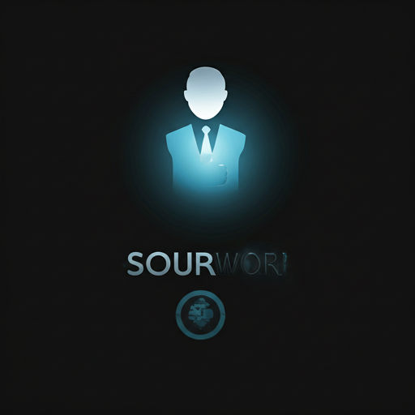
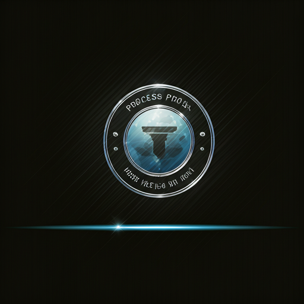
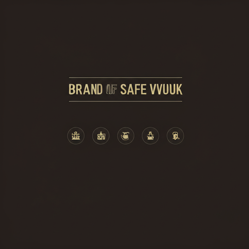

AtaraStrands was born from a singular vision: to treat
hair not merely as a product, but as an essential
luxury accessory. In Hebrew, 'Atara' signifies a crown—
a symbol of sovereignty and self-worth.
We believe that every woman deserves to carry her own
crown with confidence. Our mission is to bridge the gap
between high-fashion editorial standards and everyday
accessibility, providing hair that moves, breathes, and lives
as naturally as you do.

Each strand is meticulously sourced and hand-
processed by artisans who understand the subtle
nuances of texture and tone.

Only 1% of world-sourced hair meets the Atara
standard of integrity.

Our cold-press processing ensures the cuticle
remains intact for multi-year wear.
Custom multi-tonal blending creates depth that matches
your natural gradient.

We refuse to use silicone coatings or chemical baths.
What you receive is pure, raw excellence.
From the farm to the atelier, our supply chain is
documented and ethically audited every quarter.
Our packaging is 100% plastic-free, utilizing recycled
stone paper and biodegradable silk ties.
"Beauty is not just what you wear; it is the confidence you carry. We don't just sell hair; we provide the catalyst for a woman to see her own power reflected in the mirror."
Explore our curated collections of raw virgin hair, tailored for the woman who demands more from her luxury accessories.